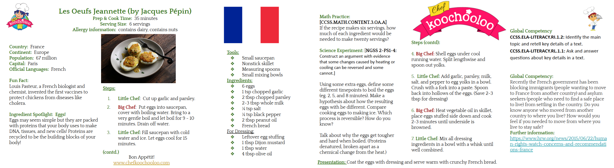
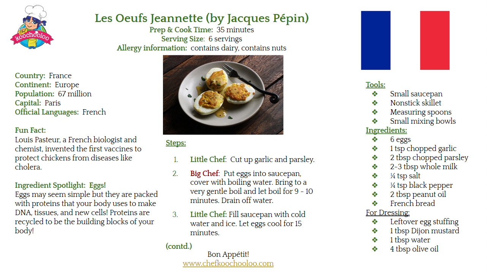
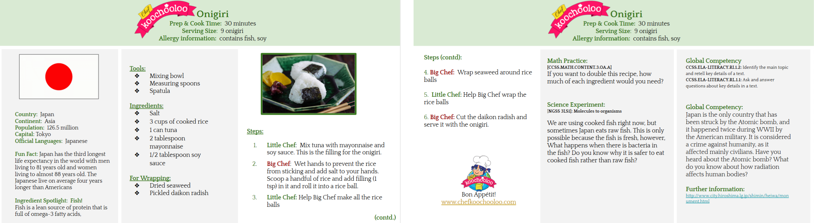
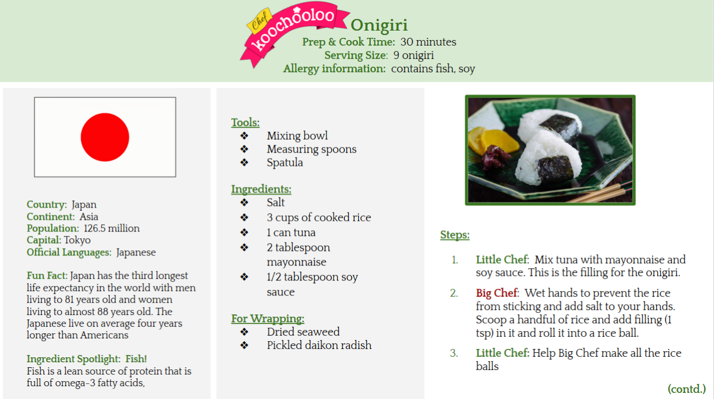

Chef Koochooloo
Education app designed to teach children STEM subjects with cooking classes. Part of a start up company in Mountain View.
TABLE OF CONTENTS
DESIGN ROLES
- Product Designer
- Product Manager
- UX/UI Designer
- Instructional Designer
- Curriculum Development
- Educator
- Visual Designer
DELIVERABLES
- 4th Grade Curriculum
- Low Fidelity Mockup
- Mid Fidelity Mockup
- Pitch Deck Design
- Wireframes
- Clickable Prototype
TOOLS
- Adobe XD
- Figma
- Google Slides
- Krita
01. OVERVIEW
Chef Koochooloo is an NSF award winning startup that claims to teach children Math, Science, Language Arts, and Social Studies with a cooking app that incorporates the aforementioned subjects.
I was hired to be an Instructional Designer, which meant I was in charge of creating the curriculum and testing this out to students on sites, predominantly in after school programs. Most of the work was done remotely, and I kept in touch with the team via Skype and text messages. We had periodic in-person meetings in Mountain View to discuss the product and its applications. I was also responsible for doing UI/UX design and product design for the app, creating the mid fidelity mockups that I then passed on to a coworker to turn into a high fidelity mockup.
02. VISUAL DESIGN
Many of the designers have tried their hand in updating the current designs for the app. The existing design could definitely be improved, so I also participated in it. I would like to state that I do not own the rights to the following characters used in this app:
Before
I made my own interpretation of the character featured in the product’s logo, using three different design styles. I used Krita, a digital painting program, and vector illustration from Figma to make the following alternatives:
After?
While our petitions to redesign the characters have been rejected by the CEO, this was a good exercise in character design for us.
We were also expected to do visual design for the pitch decks that the CEO uses to advertise her company. I have contributed to making designs for the slides in the Nestle pitch. This was a team effort, and the slides were consistently evolving to meet the needs of investors.
03. CURRICULUM (ITERATION #1)
I was responsible for creating recipes that would eventually be integrated into the fourth grade course curriculum and eventually the app itself. I also redesigned the former slides so that it would be more visually appealing and more intuitive.
Before:
 After:
 I created ten recipes, each a simplified dish from a different country. In theory, the students will learn math and science from preparing the dish, as both could be needed in order to understand the recipe and how the food transforms when it is being cooked. The reading comprehension section comes from reading a short story from a character explaining what is happening in their country, which could then turn into a geography and social studies lesson.
04. USER TESTING & RESEARCH
I was required by the CEO to test the initial fourth grade curriculum by teaching them in after school programs. I was assigned to the following schools:
- St Andrew’s (elementary school): 5-10 kids
- St Andrew’s (middle school): 5-10 kids
- Castro Mariano (K-1): 15-20 kids
- Castro Mariano (2-3): 15-20 kids
I observed how the students interacted with the course, and made note of any issues that came up within the existing curriculum. I also worked with another UX Designer, who came in as a researcher, to make our assessments on the efficacy of the program.
05. CURRICULUM (ITERATION #2)
During the process of translating the recipes into the app, I was given a guideline that I was expected to follow in order to create the fourth grade curriculum that would be used in the final product. The curriculum had to include NGSS/ELA/Common Core standards, as well as IB standards.
In the current iteration, there is a lot of room for improvement regarding the content we created with the guidelines we were given. As of now, the curriculum could work as a review or refresher for students who have already mastered the subjects, but it cannot be used to teach new material.
06. LOW FIDELITY
There was a rush to produce the app earlier than expected, and we were instructed to complete the high fidelity mockups in three days. This is, of course, a very challenging and ambitious goal.
Fortunately, the previous UX designer started a portion of the lo-fi mockup that I was able to use in order to quickly make a lo-fi mockup of five lesson plans. Unfortunately, she also deviated from the style guide created by product designers for the app. From my conversation with her, the UX designer created the parent/teacher portal and wanted the student portal to complement it, and thought that the style guide was inadequate for that. Therefore, I decided to combine elements of the style guide with the modifications she made, which was how I ended up being the product designer.
07. MID FIDELITY
As the product designer, I created the mid-fi mockups and drafted a new style guide that incorporated elements from the old style guide and the new interpretation from the previous UX designer so that it could complement the parent/teacher portal.
Besides staying in contact with the previous UX designer, I was also telling the illustrator what images we need to complete the high fidelity mockup, which would then be completed by another UX designer. I gave him the instructions about the new style guide, and design recommendations that would be different from what already exists in the app.